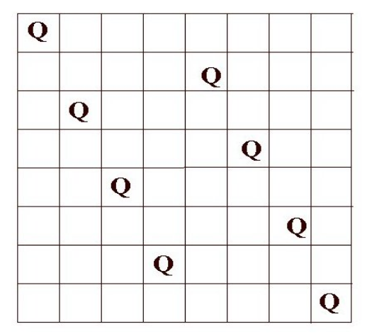
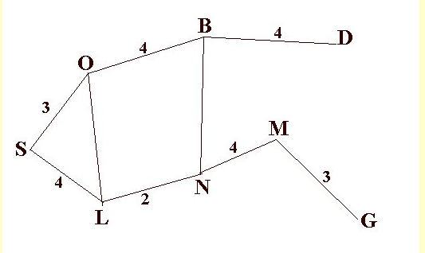

Search Techniques
nishanpantha@gmail.com
What This Chapter Is About
Uninformed Search Techniques
- Depth First Search
- Breadth First Search
- Depth First Search
Informed Search Techniques
- Hill Climbing
- Best First Search
- Greedy Search
- A* Search
- MiniMax Search
- Alpha Beta Procedure
Problem Solving Using Search
What is Problem Solving?
Generating solutions from observed data
Problem
- Set of Goals
- Set of Objects
- Set of Operations
Problem Space
All valid states using operations on objects
Search
- Search for solution in problem space
- Example: DFS, BFS,...
8 Puzzle

N Queen
Path Finding

Tower of Hanoi
Actions: PICKUP, PUTDOWN, FORWARD, BACKWARD, LEFT, RIGHT
Condition-1: Only top ring can be moved at a time
Condition-2: Smaller ring cannot be below the large one
Graph Search
- Direct Graph
- Start from Initial State
- Use operations
- Check Goal State

Tower of Hanoi State Space Representation

8-Puzzle State Space Representation

Example: Water Jug Problem

Uninformed Search
- Blind Search
- Only Problem Defintion
- No idea if one non-goal state is better than other
Blind Search
- Visit all the nodes in a a certain order for pre-defined goal
- No cleverness
- No guarantee of reaching goal state
Less Ineffective than Informed Search
Path Finding Problem
Breadth First Search
How?
- Proceed level by level down the tree
- Start from root node and explore all the children, left to right
How?
- If no solution found, expand the first(leftmost) child, then second at same depth,...
BFS

BFS
Algorithm
- Place start node at the end of queue
- Examine the node at the front of queue, then
- if queue is EMPTY, STOP
- if node is GOAL state, STOP
- else ADD the children of the node to the end of the queue
Algorithm
- Place the starting node on the queue
- If queue is EMPTY return FAILURE and STOP
- If first element on the queue is GOAL node, STOP
- Otherwise, remove and expand the first element from the queue and place all the children at the end of the queue
- Goto step 2
Data Structure?
Queue
Properties
Complete? Yes! Always reaches GOAL
Time? O(b^d):: Number of nodes generated
Space? O(b^d):: Keeps every node in the memory
Optimal? Yes! except deeper solutions
Branching Factor=b and goal found at depth=d
Disadvantages?
Space is more problem than time.
Depth First Search
How?
- Proceed down a single branch at a time
- Expand root node, then leftmost child of the root, then leftmost child of that node,..
DFS

DFS
Data Structure?
Stack (LIFO)
Algorithm
- Place the starting node on the stack
- If staack is EMPTY return FAILURE and STOP
- If top element on the stack (pop operation) is GOAL node, STOP
- Otherwise, remove and expand the top element from the stack and push the children to stack
- Goto step 2
Properties
Complete? No! Fails in infinite depth :: A-B-C-A
Time? O(b^m):: Maximum depth
Space? O(b*m):: Linear Space
Optimal? NO! except deeper solutions
Disadvantages?
Can go to wrong branch and may take very long time to find solution
Depth-Limited Search
- Optimized DFS
How?
- Perform DFS but only at a specified depth L
- The path length is at max L
Properties
Complete? No! Solution may be beyond depth level
Time? O(b^L):: Maximum depth
Space? O(b*L):: Linear Space
Optimal? NO!
Informed Search
- Domain Specific Information
- Heuristic Function h(n) : Goodness of a node n
Heuristic Function
h(n) = estimated cost of minimal cost path from n to goal state
Best First Search
- Uses evaluation function f(n) to select a node for expansion
- Node with lowest evaluation function is expanded first
Use an evaluation function for each node -> desirability
- Start with initial node and put into priority queue
- Pick the best node from the queue
- Generate its successor
- For each successor do:
- if it haas not been generated before then evaluate it and add to queue
- if it has been generated before, then change the parent and if this new path is better, update the cost of getting to its any successor node
- if the goal step is found or no more node in the queue then STOP - Go to step 2
Types of Best First Search
- Greedy Best First Search
- A* Search
Greedy Best First
- tries to get as close as it can to the goal
- expands the node that appears closest to the goal
- Uses only heuristic function
Evaluation function h(n) = estimate of cost from n to closest goal
Example: hsld(n) = straight-line distance from n to goal
f(n) = h(n)
h(n) = 0 for goal state
Properties
Complete? NO! Can get stuck in loops
Time? O(b^m):: depends on good heuristic
Space? O(b^m):: Keeps all nodes in memory
Optimal? NO!
A*
evaluation function f(n) = g(n) + h(n)
g(n) = cost so far to reach n
estimated cost from n to goal
Properties
Complete? YES!
Time? Exponential
Space? Keeps all nodes in memory
Optimal? YES!
Hill Climbing
Adverserial Search
Competitive Environments in which the agents goals are in conflict
- Often known as games
Game
- Initial State
- A successor function
- A terminal test
- A Utility function
Adverserial
Opposition between agent's Utility functions
MiniMax
- depth first search with limited depth
- Static evaluation function for all leaf nodes
- assume opponent will make the best move possible
Algorithm
Algorithm
Alpha-Beta Pruning
- Optimized MiniMax
- Instead of expanding nodes, we try to infer based on node values
- Depends on the order on how nodes are expanded
Alpha -> value of best choice so far for MAX (highest value)
Beta -> value of best choice so far for MIN (lowest value)
Each node keeps track of [alpha, beta]
Initial value
Alpha -> -INF
Beta -> +INF
Simple Pruning
Research